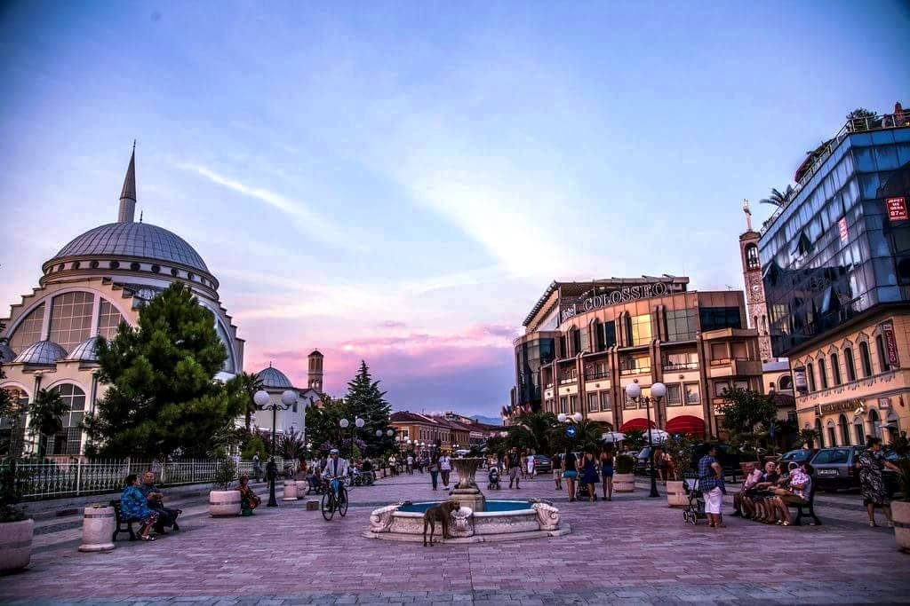

“Melodi e këputun – lot i kjartë nga syni i një grues së dashun… andje e përplasun, xhevahir i tretun, një andërr e shkelun, buzë e paputhun në melodin e këputun… “
Eh sa i përket ende kohës njaj varg lirie:
“Liri! Po, liri dhe gaforrja gëzon, Por gaforreve asht..
Liri, ku plagosi ndërgjegjen gjallon, Jo,liri nuk ështe”
Ja tek po shoh mjerim e si munet të rri pa përmendur:
“Mjerimi rrit fëmijën nën hijen e shtëpive
Të nalta, ku nuk mrrinë zani i lypsisë
Ku nuk mund t’u prishet qetsija zotnive,
ku bashkë me zoja flejnë në shtretërt e lumnis”
Ja ktu asht akoma ai realitet i shkrimeve të mia, ja baba tek sjell veç frik në familje e asnjiher dashni e lumturi, ja dhe femra e ndrydhun, e shtypun nga koha, ja ky ashtu ende realitet në zona të harrueme të Shkodrës. Edhe vllaznit si studenti ne shkrimin tim që munohen veç me sjell kultur europiane:

“Nushi thotë se edhe vajzat sa unë, edhe të martueme bile shkojnë në shkollë. Hahaha! u
përplas qeshja e vajzës në ftyrë të s’amës. Mos u qeshë ashtu moj bijë, se po të ndijnë
kojshijë...asht marre”
“Po, si atje, ndër mallet tona primitive. Duhej të gërsiste pushka. T’u bindte i madh e i vogël! T’u
lante nderi. Të vdeiste dikush e shoqnia të kënaqej. Jo se asht shpirtkeqe, por pse në qytetin tonë asht
mërzi e madhe, e me la nderin me pushkë asht një sensacion i madh, i cili nuk lent ë mbyllish syt për do
net. Por vret mërzine. Mandej nderi, or vlla, nderi, nderi nuk asht ujë, mundet me qenë shampajë, por ujë
jo.”
E ja kështu për Migjenin askush spo kujtohet, veç vrimat e gozhdave që dikur mbanin kornizat me emrin e tij, me emër rruge apo përkujtimoreje. Tani vetëm mjerim, mjerim si në shpirtra ashtu edhe në fjalë, ama jo prej shkodranëve por prej atyre që rrijn me lart se Shkodranët. Për faj të atyre që kan frik nga realiteti i shkrimeve të tij e nga zëri i lypsëve posht shtëpisë. E kështu duhej mbyllur i gjith ky shkrim me një thirrje që e ka bërë dhe vet Migjeni:
“Rini, thuaja këngës ma të bukur që di,
Thueja kangës sate që të vlon në gji
Nxirre gëzimin tand të shpërthej me vrull…”